Albedo Texture and Masks
In this first step, we'll go through how to create the various textures that we will need for the next steps.
Texture Layout
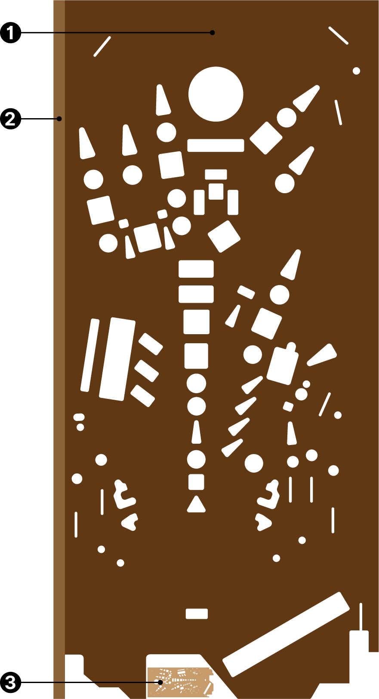The geometry of the playfield has three different areas:
- The top surface, which will occupy most of our texture
- The plywood edges, which will be re-used by all edges that we will place on the left side of the texture
- The back side of the playfield, which is virtually invisible and mainly ignored.
While often you create your geometry first, and then map the texture onto it, we're going to do it the other way around, which is firstly defining the UV-layout, and then extruding the geometry based on that. This will give us perfectly accurate mapping.
The best way of doing this is to load your playfield scan, extend the canvas to the left, add the plywood texture, and save the result to a new file.
So, let's start!
Albedo Texture
We start by creating a plywood texture for the edges. Check the dimensions of your playfield scan and create a new file with the same height (it's 6750 pixels in our example). Then, get a photo from the edge of some plywood, copy it a few times to get the whole height, and paint with a blurry brush on a mask to make the copies seamless. Add some contrast if necessary and save it as plywood.png.
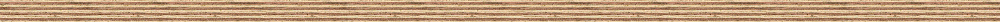 The plywood edge texture. Get the original here or an alternative here.
{kind=link}
{kind=link}
Then, open your playfield scan in Photoshop. Use the crop tool to extend the canvas to the left, with the width of your plywood texture. Copy the plywood texture next to the playfield. Verify that its width more or less corresponds to the playfield size, otherwise it'll be skewed.
Note
Tip: When cropping, make it too large. Then, paste the plywood next to the playfield, and crop it back to the plywood's border.
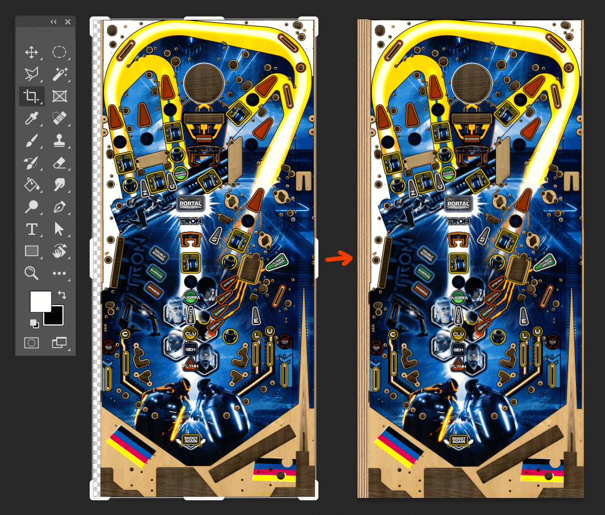
Go ahead and save this texture as albedo.png.
Wood Mask
Now we'll be creating a mask that we'll export as PNG for Substance, but also as SVG so we can extrude it in Blender.
Open Adobe Illustrator. Create a new document and import albedo.png. Resize the artboard to the exact size of the imported image (enable View -> Smart Guide to make Illustrator snap to the edges). Name the layer reference and lock it.
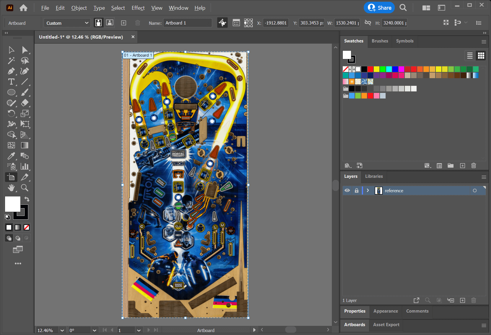
Create a new layer, name it wood mask and draw solid shapes that cover the visible holes. This includes insert holes, but also holes for lamps and triggers that aren't entirely covered by another object.
Here a few tips that will probably make your life easier.
- Click on the small circle right to the wood mask layer and set the opacity to 50%. This way, all elements in that layer are semi-transparent, allowing you to align your edges much better.
- Draw with no stroke and a fill color that doesn't exist in the art, like magenta. It gives you a better contrast and allows you to be more precise.
- Disable smart guides (
CTRL+U). It's much less annoying when you manipulate the curves. - Use Illustrator's Live Corners feature. Specially for inserts, draw pointed corners and use Live Corners to round them off. You can do this for each corner individually.
- Try to get a photo of the real playfield's back side. It gives you a better idea how narrow the inserts are cut. Often, the printed border of the insert overlaps with the hole, which isn't visible in the playfield scan.
- If you're unsure whether a hole will be visible or not, draw it. Poly count isn't as important in modern engines, and it'll save you a lot of time.
Finally, your mask should look something like this.
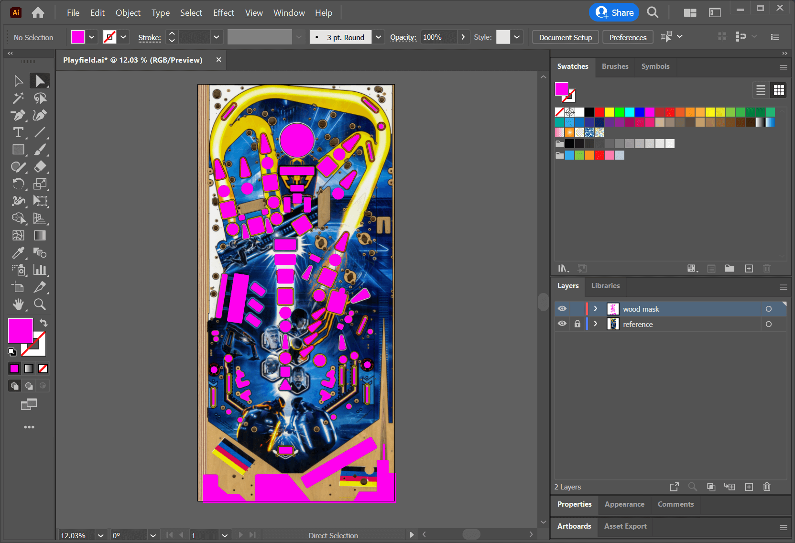
Now, we'll need the inverse shape of what you've just drawn. So, create a new layer, call it masks, and draw two rectangles: One that covers the playfield, and another that covers the plywood edge (turn Smart Guides back on for this, and make sure to snap to the edges of the artboard). Color them differently and name them full and plywood. Duplicate full by hitting CTRL+C and CTRL+F. Hide the copy and lock the masks layer so only the wood mask layer is unlocked.
Hit CTRL+A to select all the wood mask shapes, and duplicate them with CTRL+C, CTRL+F. Unlock the masks layer, Shift-select the full rectangle, open the Path Finder tool and hit the Minus Front button. Select the masks layer, right-click on the selected shape, and click Arrange -> Send to Current Layer. Rename the new object <Compound Path> to wood. Hide the reference and wood mask layer.
The result should look like this:
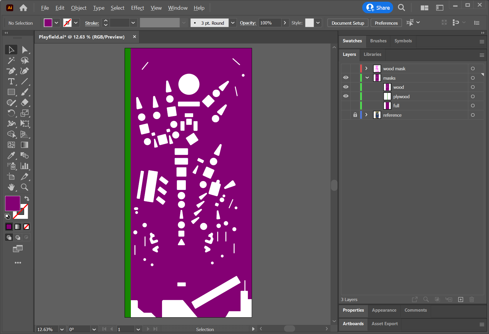
Export this as a black on white PNG: Hide plywood and fill wood black. Click on File -> Export -> Export As, choose type PNG, check Use Artboards, and name it wood-mask. Under Resolution, choose something that is at least as large as your albedo (if you haven't resized the playfield scan after pasting into Illustrator, 72 dpi will correspond to the original resolution). Set the Background Color to White.
Insert Mask
Before we export the playfield as SVG for Blender, we need to create the polygons that are placed over the inserts, so we have something to render the ink on. We still have our wood mask layer, so hide everything else but this and the reference layer.
Drag and drop the wood mask layer onto the "plus" icon at the bottom of the Layers panel to duplicate it. Name it insert mask. Hide wood mask and delete all polygons that haven't anything printed on it. For Tron, it looks like that:
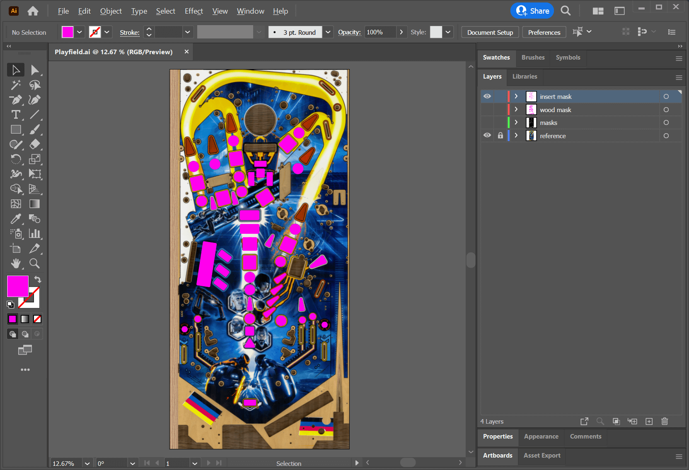
Now we have everything we need for the playfield mesh. Hide the reference layer, unhide the masks layer (with both wood and plywood visible), hit CTRL+A, CTRL+C, File -> New -> Create, CTRL+F. Then, resize the artboard so it fits the content. Click on File -> Save A Copy, choose type SVG, and name it playfield.svg. In the SVG Options dialog hit More Options and uncheck everything. Also, set Decimal Places to 5.
Note
The reason of doing it this way is that when "exporting" instead of "saving a copy", Illustrator saves the file differently, which often ends up in an erroneous import in Blender. Save A Copy also saves hidden layers which we don't want, that's why we create a new document.
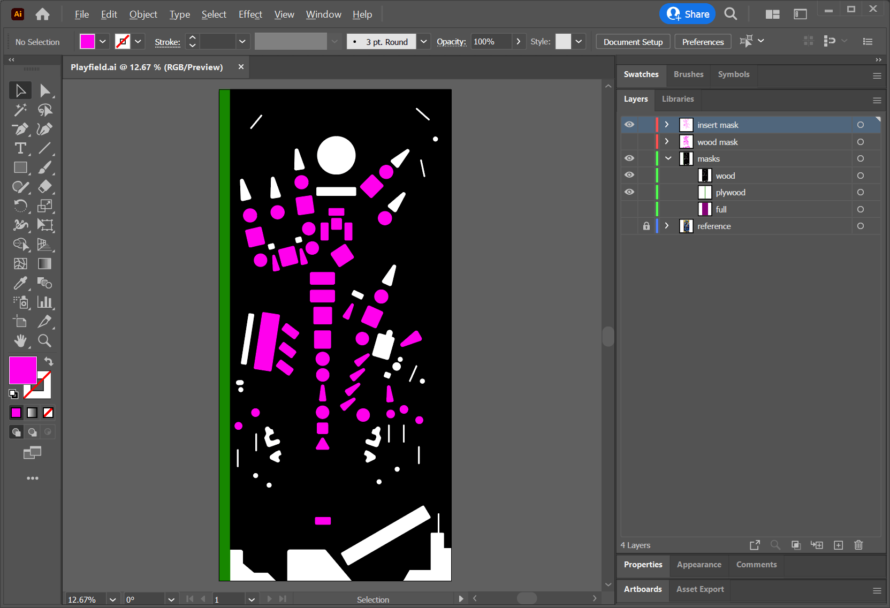 These three layers are exported as SVG.
Ink Mask
Next up is a mask that will allow us to differentiate between the ink, the wood and the alpha channel above the inserts when creating the material. If your playfield has absolutely no visible wood, just mask out the ink on the inserts. But chances are that it has, specially inside the slingshots and around the triggers.
Create a new layer and name it ink mask. Draw shapes around everything that is not ink. This includes wood, inclusively any holes, and the part of the insert drawers that aren't printed on. Close up, it looks like this:
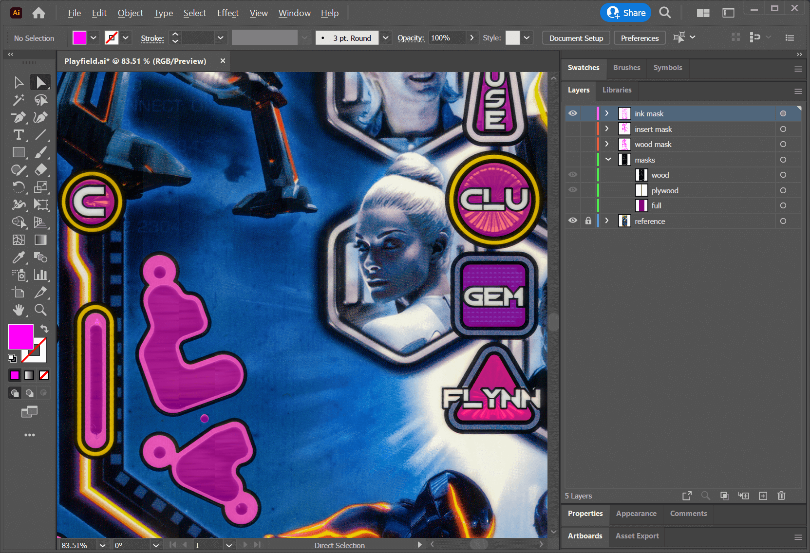
Once you're done, export it as a white on black PNG: Make all shapes white, File -> Export -> Export As, name it ink-mask.png, don't forget to check Use Artboards, and choose black Background Color. This is how it looks for Tron (black background added for illustration purpose):
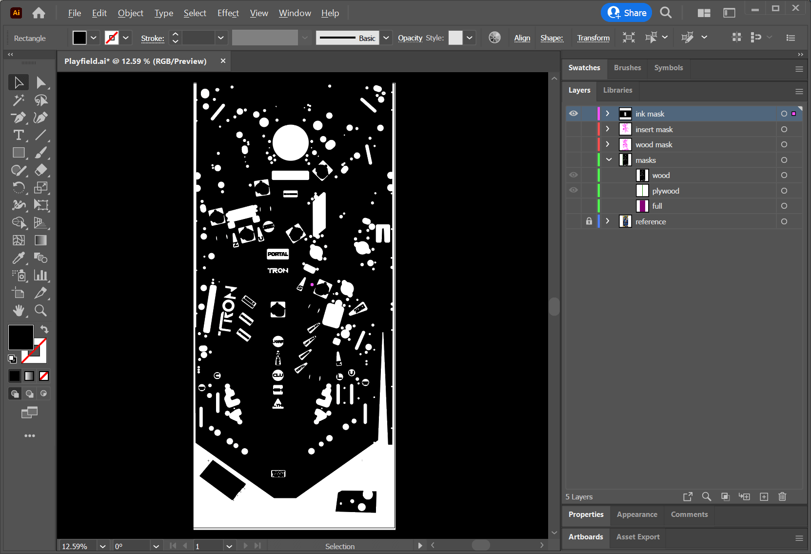
Fake Holes
Since we will not physically cut out all holes into the playfield mesh, there will be many smaller and some bigger holes where posts, pins, screws, wire guides, bumpers, and other things are attached to. Sometimes they are even visible, but not recognizable as a full-featured hole.
Masking those elements out allows us to use a proper height map later when creating the materials. It also allows us to replace the scanned wood with a high-quality material, and still be able to exactly know where to position elements on the playfield.
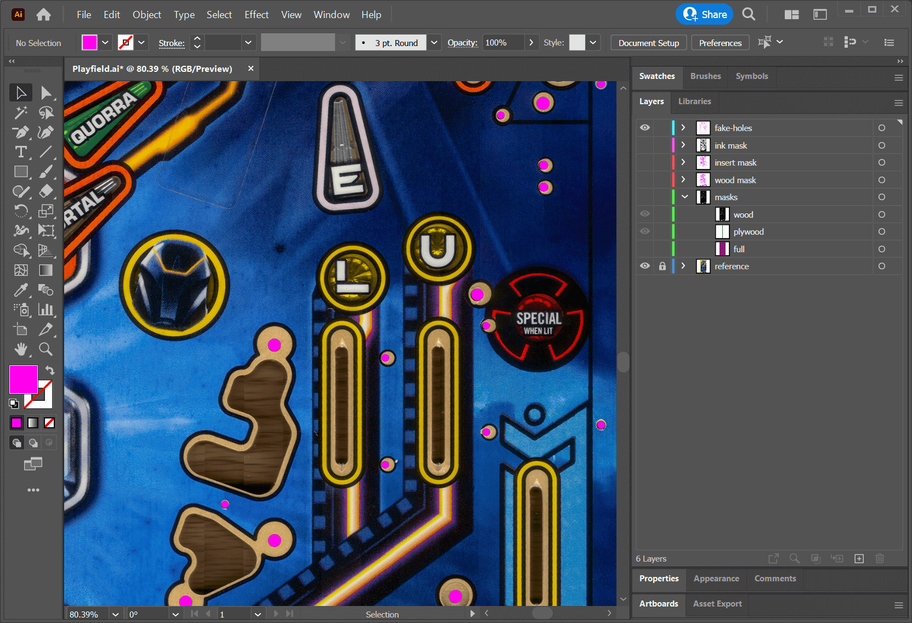
Once you're done, export this as a white on black PNG the same way you did with the ink mask just before, and name it fake-holes-mask.png (don't forget to check Use Artboards).
Other Masks
Tron has two special features: Mylar stickers to protect the playfield, and the Limited Edition has silver paint around the inserts. We'll draw those as well and export the masks white on black as mylar-mask.png and silver-mask.png.
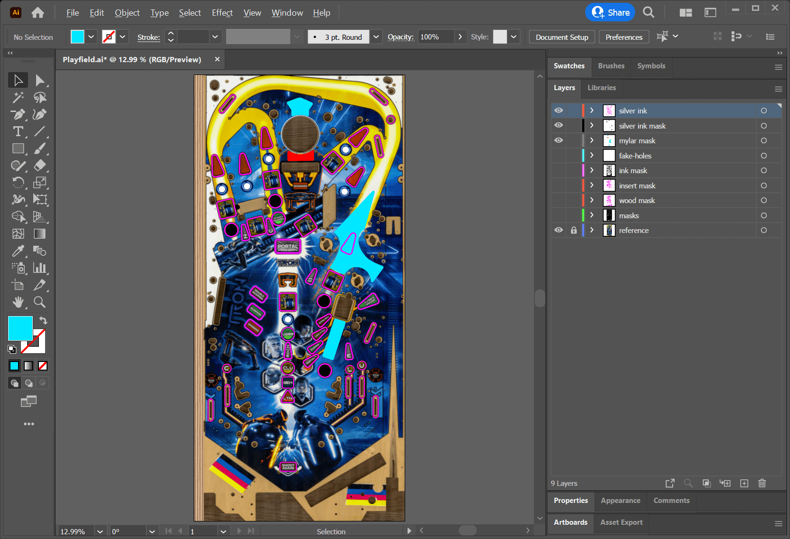
The reason to mask out both of these features separately, is that we can create special material properties in Substance Painter later. For example, the silver layer will have a much smoother surface than the ink, while being metallic, and the Mylar layer will have a different height and roughness.
Conclusion
To wrap up, we've now created an albedo texture and several masks that will allow us later to texture the playfield. This is how our folder looks now:
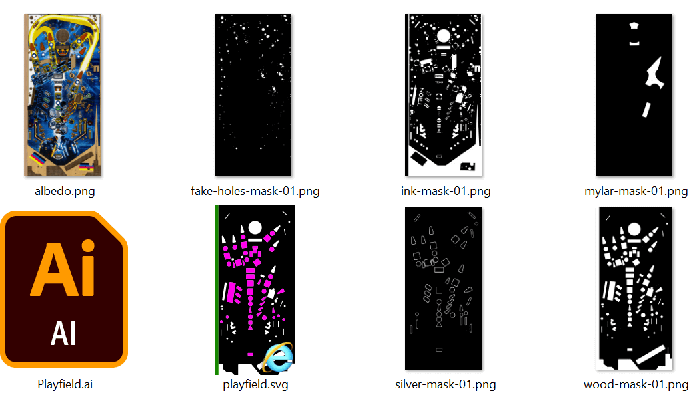
This concludes our time in Illustrator. Let's close it and continue with Blender in the next step.